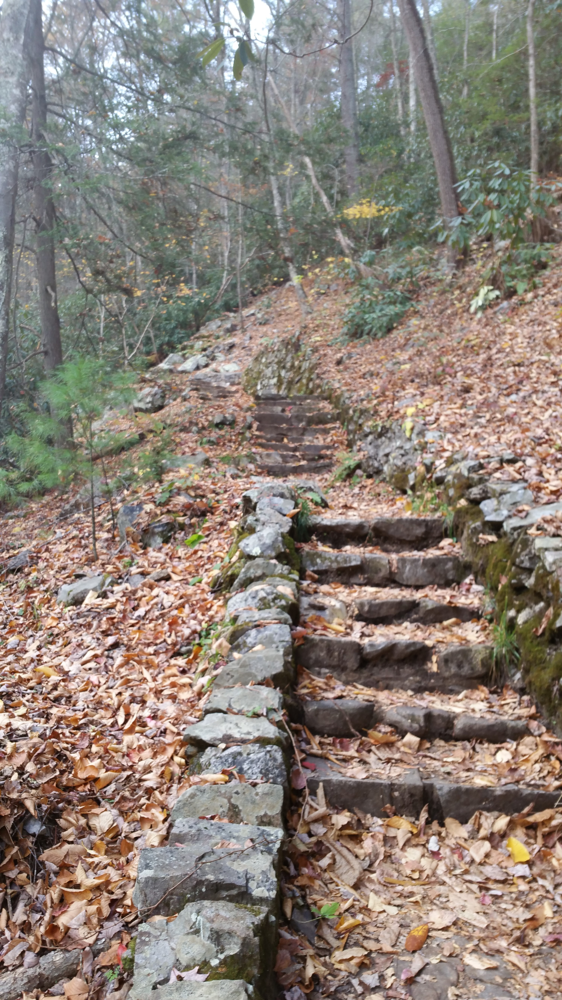
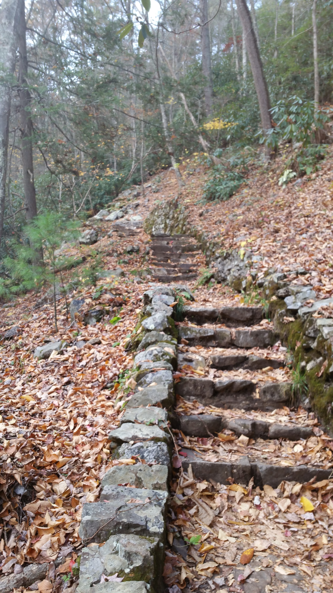
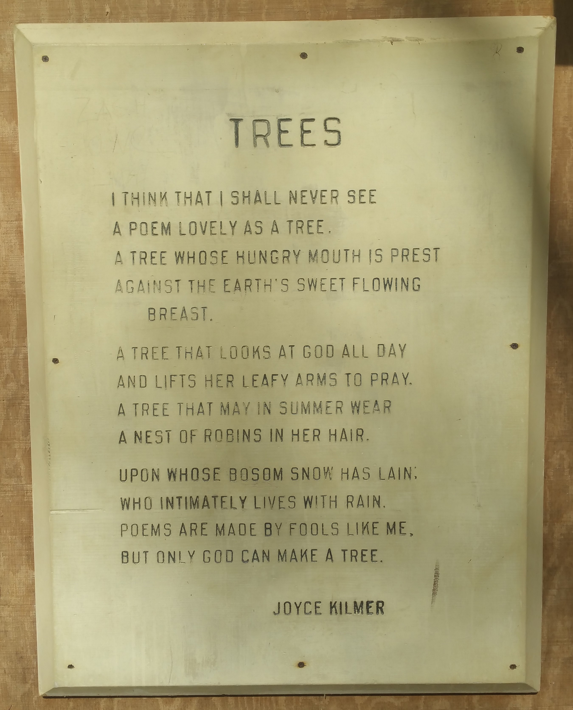
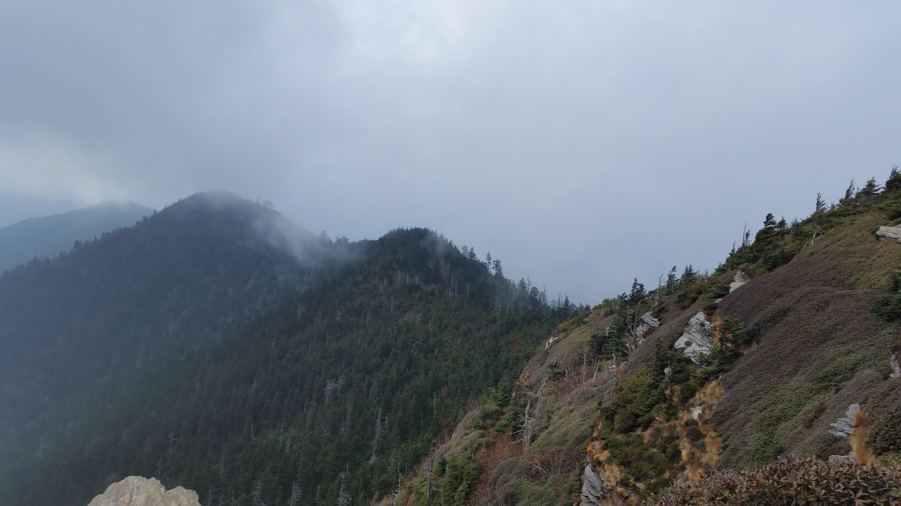
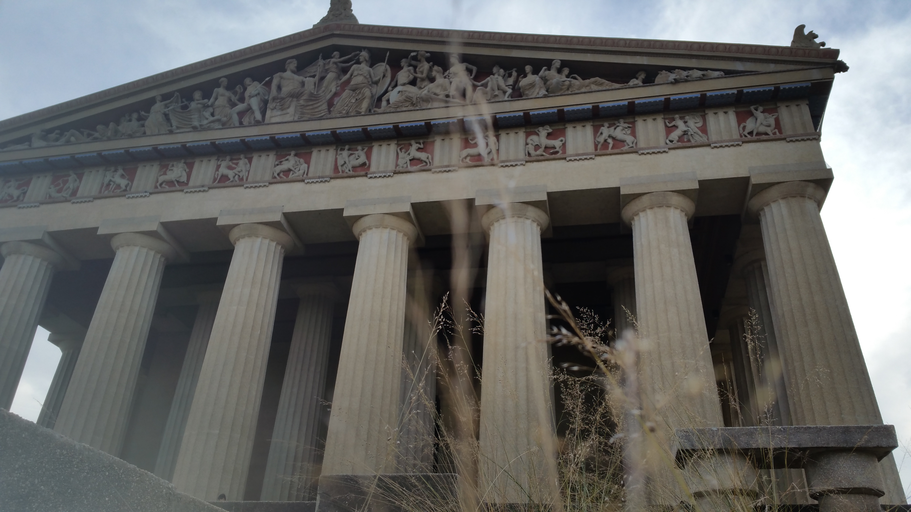
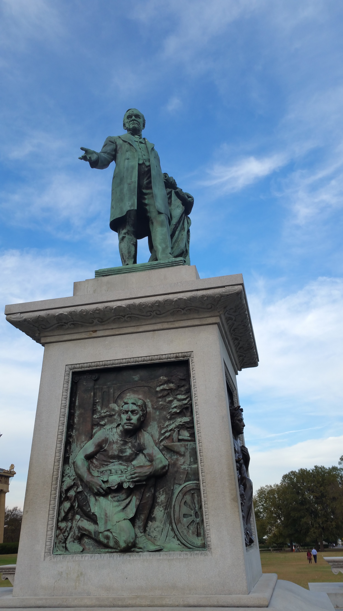

Election Day is over and done, and we all know how it's gone. After this leg of the trip, we can honestly say we're both extremely disappointed and very, very unsurprised. We're down here in Florida, and since we left the state of Pennsylvania we have seen maybe... 4 Clinton signs in peoples' yards. You can't forget the heartland! Alas, we've all heard enough about that for one day.
Twisting mountain roads, rolling green hillsides rife with horse and cattle, depressed manufacturing towns, and creepily-empty groceries--Appalachia. The beautiful heartland of eastern US. Culturally very different from our home in the northeast, with a natural beauty that was--familiarly--respected by all.
We ended our first day out of PA in Virginia, at a Walmart within the George Washington National Forest. It was a beautiful drive through the plains of Pennsylvania (we even took a brief dip through West Virginia!), but we came in too late to try and seek out a campsite. But we were greeted by a friendly local upon arrival...

Sweet Bip!! We went inside to buy him some cat food, but he was gone upon our return
From there we drove on some beautifully-forested roads deeper into the National Forest, stopping off at the Pines campground early in the day to relax back in the peace of nature.

Bliss.
We took a short hike up a hillside the morning after, happening upon the site of an old wildfire (more on that later), but the trail eventually petered out into nothing and we headed back. We spent the rest of the day driving through the gorgeous rolling greens of the Appalachian foothills. We eventually (after a grueling 3-mile uphill trek on some very rough gravel roads) came to the peak of Big Walker Mountain.

Our campsite that evening. Awesome outdoor fireplace!

And the view from said campsite.
It was here that we met our first fellow vagrants!! Two fellow Massachusettsians, headed home from their cross-country, car-dwelling adventure. Sadly, they didn't seem to want to hang out (or maybe we didn't...we're still not sure what went wrong) but they did share the mountaintop with us for the night.
From there we were headed towards Cherokee National Forest, in northeast TN, but we got sidetracked by the awe-inspiring Backbone Rock. It passed right over the road, how could we not pull over?!
 

The stairs up the rock

The view from the top!

The nearby river, Beaver Creek...

Stairs across the road, with a shrine-like, moss-covered bench

One of the many waterfalls feeding Beaver Creek

We've been lucky enough to surf peak leaf season all the way down the continent
After spending a good few hours exploring around Backbone Rock, we actually found ourselves headed down into North Carolina! We wanted to spend some more time in the region, particularly Great Smoky Mountain National Park!! We ended being extremely fortunate in our campsite for the evening...


Yum...
In the morning we headed to the nearby Joyce Kilmer Memorial Forest for a short walk (through one of the oldest forests in the eastern US), which ended up being an incredible experience. A local Cherokee was walking through the same woods as us, and he sang a traditional "Cherokee Honoring Song", which reverbated through the woods in a mystical way. I managed to record some of it (to eventually use for a song of my own), but it was a chilling, once-in-a-lifetime experience.

The memorial placed amongst the tallest trees around...

And boy, were they tall!!

The view from the nearby overlook...

And the overlook itself
From there we headed through the Cherokee reservation of North Carolina, where we ran into an unexpected visitor...

He was just hanging out in the river, posing for photos
And then we headed to Clingman's Dome, the lookout-point attraction of Smoky Mountain National Park! The day had gotten fairly hazy by then, but we cooked ourselves a delicious dinner by sunset before heading down into the Walmart of nearby Pigeon Forge, TN (what a name...)
We awoke early the next morning to take on our biggest hike since Mt Washington, over a month prior! Mt LeConte, the third highest peak of the Great Smokies. It was a tough 14-mile round trip, but well worth the effort.

The signs for the trails we took up and down, respectively.

The LeConte Lodge, at the peak.

Views from the peak!

This dude came right up to us to eat his pine-nuts
We were wiped out that evening, and passed out once more in the same Walmart parking lot. However, the next day didn't go quite according to plan...
Running into our first car troubles on our journey, the battery had died! It didn't sound like any dead battery we had ever heard, so we called up AAA to have them take a look at it. While we waited, we were greeted by a dude (named Bobby) with his dog, who offered to lend us a hand with things. Turns out, Bobby was a fellow vagrant! Although, he was a bit more of a (self-described) bum than we were. So we waited for AAA, drank from 40s and smoked cigarettes in the parking lot, and learned some tricks of the hobo trade from Bobby. We also learned some info about drugs and addiction that we could have done without. It was quite the learning experience ("we're white collar hobos, if hobos at all"), but AAA successfully jumped our battery and boy, we were glad to get away by the end of that afternoon.
We spent the evening driving to Nashville, and passed a massive wildfire right by the highway! Turns out, Appalachia's drought has lead to a severe wildfire problem across the state, and the entire region has since passed an open fire ban. (For more info about these terrible fires, click here.
We made it to Nashville that evening, and once more slept in a nearby Walmart parking lot. We headed into the city with morning, but were unable to park anywhere near downtown until a motorcycle rally passed through! It was cool to watch, though.


Broadway, the main drag!
The magnificent Union Station Hotel

Incredible place, they were preparing for a wedding!
We also checked out the Parthenon (???) in Centennial Park, which was pretty amazing.

And the nearby Womens' Rights' Movement Monument!
James Robertson, one of the founders of Nashville
We drank and danced the night away at a fantastic dueling piano bar on Broadway, the Big Bang! The musicians there were all incredibly talented (and hilarious), and we had so much fun we took a bumper sticker! But we were hurting in the morning...

Hurting bad, we spent much of the morning nursing those hangovers and chugging water. Once we felt recovered, we went to check out the Grand Ole Opry! Sadly, the free museum there had been flooded out during the Cumberland River overflow in 2010, and the tours were booked out for days. But it was a cool place!

After that we headed south from Nashville to the Meriwether Lewis Monument, along the Natchez Trace Parkway (which we had discovered because of the adjacent campsite!)

Pioneers used to hike hundreds of miles along this old foot-trail, it's crazy!

There's a lot of skepticism surrounding Meriwether Lewis' death, but his memorial is lovely...

And the site of his death.
We headed down the Natchez Trace Parkway, and stopped at a number of historic sites along the way...

A pretty lame site, but we happened upon a huge number of stray dogs here... they were too scared to approach us. So sad...

 \
\
Rock Spring, the first natural spring either of us have ever seen before!
There was even an Indian Mound, over 10000 years old! Wasn't much there, but it was a chilling place to be nonetheless.


Also, this terrifying monster cave that used to also be a natural spring... creepy as hell, but very cool.
By that point, we were in Mississippi! But we drove through the evening and spent the night in (yet another) Walmart parking lot, this time south of Birmingham, AL.

Another cute stray kitten we met at a gas station in Alabama. We fed her some cheese!
From there we headed down into Florida, where we'll be for the next few days to celebrate my cousin Michelle's wedding! Very exciting, congrats 'Chelle!


We spent our first day on the beach chasing (and catching) sand-crabs. Cuties!
Thanks for reading, and stay tuned for more!
Mileage: 5700
Weather: Cloudy, windy, 70F
Currently listening to: Jinsang - Solitude